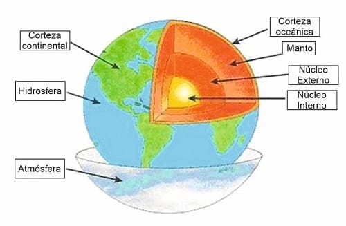
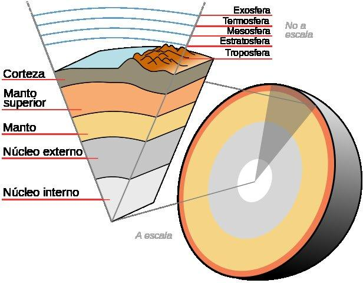
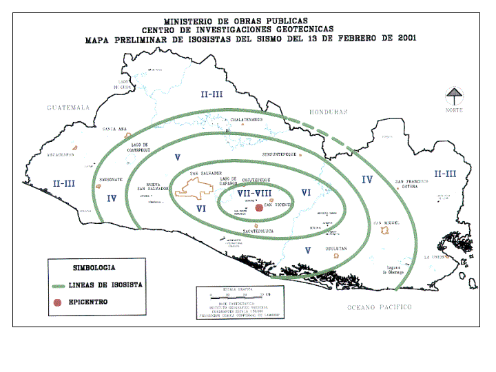

Galería
Visualizaciones científicas
La galería reúne imágenes y esquemas académicos del tema: capas de la Tierra, clasificación de capas internas/externas, escala del tiempo geológico con fósiles guía y cartografía sísmica de El Salvador. Cada recurso visual se utiliza como apoyo didáctico para discutir estructura interna, tiempo geológico y campos geofísicos.





Créditos visuales: imágenes incorporadas en el repositorio del proyecto para uso académico interno. El sustento conceptual de estas visualizaciones se desarrolla por parafraseo y referencias verificables en hemeroteca (Servicio Geológico Colombiano, 2025, 2026; Instituto Geofísico de la Escuela Politécnica Nacional, 2026).